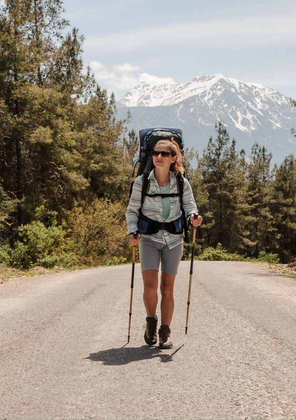
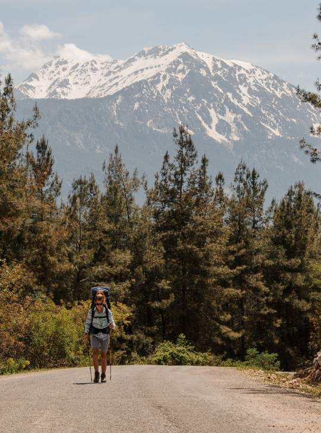
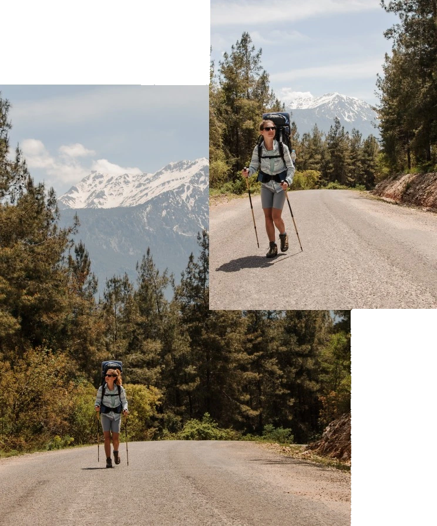
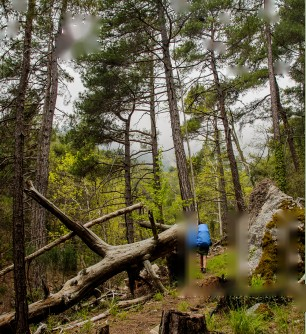
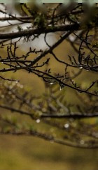
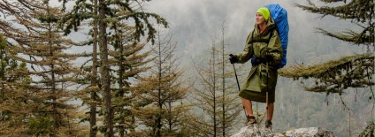

01
Це корисно
Нордік дозволяє задіяти 80-90% м’язів, позитивно впливає на серцево-судинну систему, додає витривалості та гнучкості.

Нордік (скандинавська ходьба) – вид кардіо-тренувань, який виконується зі спеціальними палицями, які дозволяють максимально задіяти не тільки нижню, а й верхню частину вашого тіла. Це корисна, доволі проста та бюджетна активність, що дозволяє людям бути здоровими.
Дізнатися більшеНордік дозволяє задіяти 80-90% м’язів, позитивно впливає на серцево-судинну систему, додає витривалості та гнучкості.
Знадобляться лише зручне взуття та спеціальні палиці. Палиці радимо спробувати різні та лише потім купляти ті, що вам підходять.
Нордік – як ходяча медитація: знижує рівень тривожності, допомагає подолати депресивні стани та покращує загальне самопочуття.

Спробуй
Скандинавська ходьба популярна в розвинених країнах, де люди звикли піклуватися про себе та своє здоров’я: в Фінляндії, Норвегії, Швеції, Данії, Великобританії, США та інших.
Скандинавська ходьба популярна в розвинених країнах, де люди звикли піклуватися про себе та своє здоров’я: в Фінляндії, Норвегії, Швеції, Данії, Великобританії, США та інших.


Ми хочемо, щоб нордік був популярним ів
Україні ПриєднуйсяПрактикуєте нордік на постійній основі та шукаєте компанію? Долучайтеся до клубу NordiGO
ПриєднатисяХочете спробувати скандинавську ходьбу? Запишіться на пробне тренування.
Спробувати